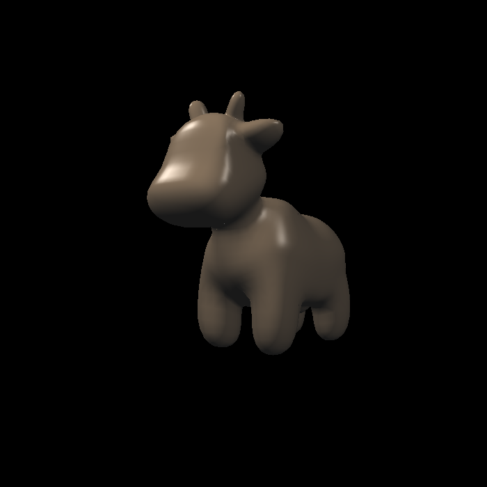
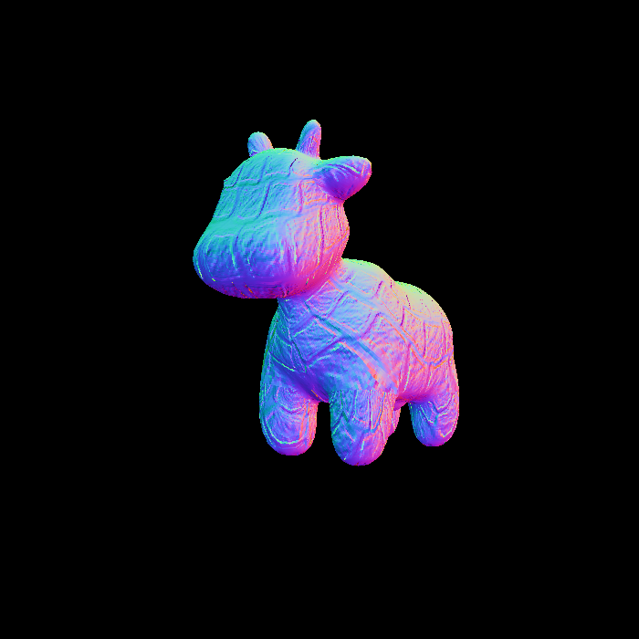
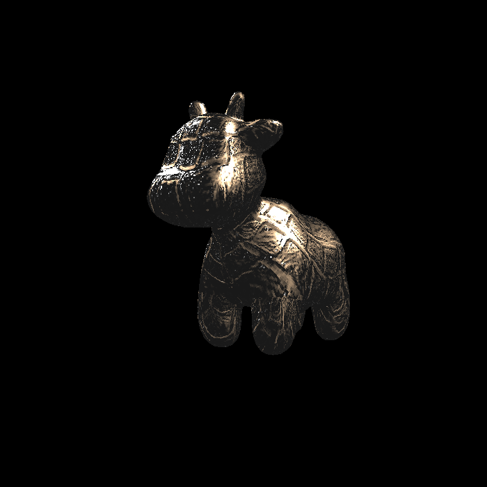

作业3-Shading
1 任务
- 修改函数rasterize_triangle(const Triangle& t) in rasterizer.cpp: 在此处实现与作业2类似的插值算法，实现法向量、颜色、纹理颜色的插值。
- 修改函数get_projection_matrix() in main.cpp: 将你自己在之前的实验中 实现的投影矩阵填到此处，此时你可以运行./Rasterizer output.png normal 来观察法向量实现结果。

3. 修改函数phong_fragment_shader() in main.cpp: 实现 Blinn-Phong 模型计算Fragment Color.

- 修改函数 texture_fragment_shader() in main.cpp: 在实现 Blinn-Phong 的基础上，将纹理颜色视为公式中的 kd，实现 Texture Shading Fragment Shader.

5. 修改函数 bump_fragment_shader() in main.cpp: 在实现 Blinn-Phong 的 基础上，仔细阅读该函数中的注释，实现Bumpmapping.

6. 修改函数 displacement_fragment_shader() in main.cpp: 在实现 Bump mapping 的基础上，实现displacement mapping

2 项目解读
2.1 运行项目
build/rasterizer.exe output.png normal
- 第一项即要运行的程序名
- 第二项为输出图像的路径和名称
- 第三项为渲染模式，分为texture,normal,phong,bump,displacement五种模式
2.2 Texture类
class Texture{
private:
cv::Mat image_data;
public:
Texture(const std::string& name)
{
image_data = cv::imread(name);
cv::cvtColor(image_data, image_data, cv::COLOR_RGB2BGR);
width = image_data.cols;
height = image_data.rows;
}
int width, height;
Eigen::Vector3f getColor(float u, float v)
{
auto u_img = u * width;
auto v_img = (1 - v) * height;
auto color = image_data.at<cv::Vec3b>(v_img, u_img);
return Eigen::Vector3f(color[0], color[1], color[2]);
}
};
2.3 Rasterizer类
本项目中纹理Texture是存储在Rasterizer类里面的。
可通过r.set_texture(Texture(texture_name))来设置Rasterrizer里面的纹理
2.4 法线向量的变换
作业项目rasterizer.cpp的draw()函数里面，对三角形顶点坐标分别进行了mv变换和mvp变换，于此同时也要对法线进行相应的变换。代码如下，下面将解读为什么变换公式是这样的。
//前面顶点坐标已经进行了mv变换到摄像机空间
//与之相应的，法向量也需要变换到摄像机空间
Eigen::Matrix4f inv_trans = (view * model).inverse().transpose();
Eigen::Vector4f n[] = {
inv_trans * to_vec4(t->normal[0], 0.0f),
inv_trans * to_vec4(t->normal[1], 0.0f),
inv_trans * to_vec4(t->normal[2], 0.0f)
};
2.4.1 公式推导
在三维空间中，表面的法线向量与切线向量存在核心几何关系：
设表面切线向量为 \(\mathbf{t}\)（方向向量），法线向量为 \(\mathbf{n}\)（方向向量）；
二者必须满足垂直关系（点积为 0）：
当对表面应用顶点变换矩阵 \(M\)（如模型视图矩阵 view * model）时：
切线向量作为方向向量，直接通过 \(M\) 变换为新切线 \(\mathbf{t}'\)：
设法线的变换矩阵为 \(N\)，变换后法线为 \(\mathbf{n}'\)：
为保证变换后法线仍与切线垂直，需满足：
将切线变换和法线变换代入垂直条件：
根据向量点积与转置的关系 \(\mathbf{a} \cdot \mathbf{b} = \mathbf{a}^T \cdot \mathbf{b}\)，上式可改写为：
根据矩阵转置性质 \((A \cdot B)^T = B^T \cdot A^T\)，展开左侧：
由原垂直条件 \(\mathbf{n} \cdot \mathbf{t} = \mathbf{n}^T \cdot \mathbf{t} = 0\)，要使上式对任意垂直的 \(\mathbf{n}\) 和 \(\mathbf{t}\) 恒成立，需满足
（其中 \(I\) 为单位矩阵，因 \(\mathbf{n}^T \cdot I \cdot \mathbf{t} = \mathbf{n}^T \cdot \mathbf{t} = 0\)）
对上式两侧同时左乘 \(M^{-1}\)（\(M\) 的逆矩阵），得：
两侧同时转置，最终得到法线变换矩阵：
综上： 对于如果顶点坐标进行\(M\)变换的话，法线向量要进行的变换矩阵为\((M^{-1})^{T}\)
正交矩阵
对于一个 n 阶实矩阵 \(A\)，如果它的转置矩阵 \(Aᵀ\)与自身的乘积等于单位矩阵 \(E\)，同时自身与转置矩阵的乘积也等于单位矩阵 \(E\)，那么 \(A\) 就是正交矩阵。其数学表达式为：\(Aᵀ A = A Aᵀ = E\)
因此，如果顶点坐标的变换矩阵\(M\)是正交矩阵的话，其实法线向量的变换矩阵也可以直接使用\(M\)
2.5 映射到屏幕坐标
这部分代码来自rasterizer.cpp的draw()函数，会把经过mvp变换之后坐标转化为屏幕坐标。
float f1 = (50 - 0.1) / 2.0;
float f2 = (50 + 0.1) / 2.0;
//Viewport transformation
for (auto & vert : v)
{
vert.x() = 0.5*width*(vert.x()+1.0);
vert.y() = 0.5*height*(vert.y()+1.0);
//把z坐标从[-1,1]映射到[-0.1, -50]
vert.z() = vert.z() * (-f1) + f2;
}
3 我的实现
3.1 normal模式
- 修改函数rasterize_triangle(const Triangle& t) in rasterizer.cpp: 在此处实现与作业2类似的插值算法，实现法向量、颜色、纹理颜色的插值。
- 修改函数get_projection_matrix() in main.cpp: 将你自己在之前的实验中 实现的投影矩阵填到此处，此时你可以运行./Rasterizer output.png normal 来观察法向量实现结果。

3.2 phong模型
修改函数phong_fragment_shader() in main.cpp: 实现 Blinn-Phong 模型计算Fragment Color.
phong模型的概念请见[[07-09 Shading#1 布林-冯反射模型 Blinn-Phong Reflectance model|布林冯反射模型]]
添加的核心代码如下
auto v = eye_pos - point;
auto l = light.position - point;
auto h = (l + v).normalized();
float r_2pow = l.dot(l);
Eigen::Vector3f ambent = ka.cwiseProduct(amb_light_intensity);
Eigen::Vector3f diffuse = kd.cwiseProduct(light.intensity/r_2pow) * std::max(0.0f, normal.normalized().dot(l.normalized()));
Eigen::Vector3f specular = ks.cwiseProduct(light.intensity/r_2pow) * std::max(0.0f, std::pow(normal.normalized().dot(h), p));
result_color += ambent + diffuse + specular;
BUG
这里max和pow的顺序有问题，导致当p为偶数，点乘结果为负数的时候出现问题。具体请见[[作业3-Shading#3.5 实现displacement]]

3.3 添加纹理
只需要在phong模型的基础上上修改初始颜色为纹理颜色即可。

遇到的warning
libpng warning: iCCP: known incorrect sRGB profile
3.4 实现Bumpmapping
修改函数 bump_fragment_shader() in main.cpp: 在实现 Blinn-Phong 的 基础上，仔细阅读该函数中的注释，实现Bumpmapping.
因为uv坐标值可能大于1，导致根据uv坐标读取texture中的像素值时发生段错误。
技巧
用vscode调试的时候可以通过查看调用栈来定位出错的具体位置。
为了实现传参的调试，参见[[GAMES101/UTILITIES#2 cmake vscode 传参调试|vscode传参调试]]
解决方法是修改getColor函数
Eigen::Vector3f getColor(float u, float v)
{
u = u - floor(u);
v = v - floor(v);
auto u_img = u * width;
auto v_img = (1 - v) * height;
auto color = image_data.at<cv::Vec3b>(v_img, u_img);
return Eigen::Vector3f(color[0], color[1], color[2]);
}
Bumpmapping主要是实现从高度贴图中求出切向空间的法线向量，之后通过TBN矩阵转化到世界空间。具体公式请见 [[07-09 Shading5.2.5 法线贴图(Normal Mapping)|法线贴图的应用]]
bump mapping需要的是高度贴图，但是这个作业中给的是法线贴图。高度贴图一般都是灰度图，而法线贴图一般是RGB图。
如果从法线贴图得到高度呢，如果用RGB平均值作为高度的话,得到的结果如下图所示

如果使用\(\sqrt{R^2+G^2+B^2}\) 作为高度的话(代码中使用.norm()实现)，得到的结果如下：

但是，这两张都与作业任务中图片不同，这是因为我在返回result_color之前进行了映射，防止颜色的值为负数
result_color += (normal.normalized() + Eigen::Vector3f(1.0f, 1.0f, 1.0f)) / 2.f;
如果不添加这里的映射的话，得到的结果如下图所示：

3.5 实现displacement
点的位置需要移动（沿哪个方向移动，移动多少）
displacement的含义是“置换”，即模型的顶点需要沿着法线方向，根据bump texture中的高度信息移动对应的长度，之后根据高度图的梯度信息，修改法线方向。
需要注意的是模型应该沿修改之前的法线移动，移动的长度由高度图中的数值决定。另外，因为高度图的范围是[0,255]。需要根据实际情况将它的范围进行映射。
在代码中使用了一个系数kn=0.1对高度图映射到了更小的范围上。并且因为高度图的值都是正数，顶点只沿法线正向移动。如果需要顶点也能负向移动的话，需要修改这里的映射逻辑。
发现之前实现phong模型出现的问题
实现displacement之后，运行程序发现模型表面出现一些白色亮点。
解决bug之前

仔细观察发现，亮点都大多出现在高光处。因此推测是高光的计算出了问题。
排查代码发现，是求最大值的位置出现错误。
Eigen::Vector3f specular = ks.cwiseProduct(light.intensity/r_2pow) * std::max(0.0f, std::pow(normal.normalized().dot(h), p));
程序中p是偶数，所以如果点乘结果为负数，也会因为pow变成正数。这不是我们期望的。
我们期望的是当点乘结果为负数时，就归零。
所以应该在max的外面使用pow。修改后的代码如下：
Eigen::Vector3f specular = ks.cwiseProduct(light.intensity/r_2pow) * std::pow(std::max(0.0f,normal.normalized().dot(h)), p);
现在结果正常了：

4 第三方库
4.1 OpenCV
4.1.1 cv:Mat 图像/矩阵容器
cv::Mat 是 OpenCV 中最核心的图像 / 矩阵容器，以下是开发中最常用的信息：
核心属性（描述数据基本信息）
rows：行数（图像高度，单位像素）；cols：列数（图像宽度）。size()：返回cv::Size(cols, rows)，快速获取宽高。channels()：通道数（如灰度图 1，BGR 彩色图 3）。type()：数据类型（含深度 + 通道，如CV_8UC3表示 8 位无符号、3 通道，最常用）。
常用创建方式
- 读取图像：
cv::Mat img = cv::imread("path.jpg");（直接得到图像 Mat）。 - 手动创建：
cv::Mat mat(rows, cols, type);（如cv::Mat(480, 640, CV_8UC3)创建 640x480 的 3 通道图）。 - 初始化值：
cv::Mat::zeros(rows, cols, type)（全 0）、cv::Mat::ones(...)（全 1）、cv::Mat::eye(...)（单位矩阵）。
像素访问（最常用两种方式）
at<>()方法（简单直观，适合单次访问）：
彩色图（3 通道）：img.at<cv::Vec3b>(i,j)[0]（B 通道）、[1]（G）、[2]（R）。
灰度图（1 通道）：gray.at<uchar>(i,j)。
内存管理（避坑关键）
- 浅拷贝：
cv::Mat b = a;仅复制头部，共享数据（改 b 会影响 a）。 - 深拷贝：
cv::Mat c = a.clone();或a.copyTo(c);，数据独立（安全）。
高频操作
- 通道分离 / 合并：
cv::split(img, channels);、cv::merge(channels, img);。 - 类型转换：
cv::cvtColor(img, gray, cv::COLOR_BGR2GRAY);（彩色转灰度）。 - 裁剪 ROI：
cv::Mat roi = img(cv::Rect(x,y,w,h));（提取子区域，浅拷贝）。
4.2 OBJ_Loader.h
4.2.1 顶点Vertex的数据结构
包含这个点的位置Position，法向Normal，纹理坐标TextureCoordinate
struct Vertex
{
// Position Vector
Vector3 Position;
// Normal Vector
Vector3 Normal;
// Texture Coordinate Vector
Vector2 TextureCoordinate;
};
4.2.2 面Mesh的数据结构
struct Mesh
{
// Default Constructor
Mesh()
{
}
// Variable Set Constructor
Mesh(std::vector<Vertex>& _Vertices, std::vector<unsigned int>& _Indices)
{
Vertices = _Vertices;
Indices = _Indices;
}
// Mesh Name
std::string MeshName;
// Vertex List
std::vector<Vertex> Vertices;
// Index List
std::vector<unsigned int> Indices;
// Material
Material MeshMaterial;
};
4.3 Eigen
4.3.1 a.cwiseProduct()
Eigen 是 C++ 中常用的线性代数库，cwiseProduct() 是其矩阵 / 向量类的成员函数，用于逐元素相乘（区别于矩阵乘法 * 运算符，后者是线性代数中的矩阵乘积）。
Matrix2d a;
a << 1, 2,
3, 4;
Matrix2d b;
b << 5, 6,
7, 8;
// 逐元素相乘
Matrix2d c = a.cwiseProduct(b);
对于Vector3f之类的类型，cwiseProduct同样表示逐元素相乘。
4.3.2 矩阵Matrix4f
在 Eigen 库中，将三个 3 维向量t、b、normal拼接为 3x3 的TBN矩阵（通常以这三个向量为列向量），正确的做法是通过矩阵的列操作来赋值。直接用{t, b, normal}初始化矩阵在 Eigen 中不支持，需要显式指定每一列。
// 声明3x3矩阵
Eigen::Matrix3f TBN;
// 分别将t、b、normal设为矩阵的第0、1、2列（TBN矩阵的列向量）
TBN.col(0) = t; // 第一列是t
TBN.col(1) = b; // 第二列是b
TBN.col(2) = normal; // 第三列是normal
5 Cpp特性
5.1 push_back()
- 功能定位：C++ 标准库容器（如
vector、list、deque等）的成员函数，用于在容器末尾添加一个新元素。 - 操作逻辑：
- 对
vector：若当前容量不足，会先自动扩容（分配更大内存、拷贝旧元素、释放旧内存），再在末尾插入新元素； - 对
list/deque：无需扩容，直接在尾部节点后新增元素，效率更稳定。
- 对
- 参数要求：需传入与容器元素类型匹配的值（可直接传值，或通过
std::move传右值以提升效率）。 - 常见用途：动态向容器中添加元素，是日常开发中填充
vector等序列容器的常用操作。 - 注意点：
vector使用push_back可能因扩容导致迭代器失效，需避免在迭代过程中调用；若需在容器中间插入元素，应使用insert函数。
push_back的功能和emplace_back差不多，但emplace_back能够减少一次复制，因此性能稍好一点
5.2 std::function
std::function<Eigen::Vector3f(fragment_shader_payload)> active_shader = phong_fragment_shader;
1. 定义对象：声明名为
active_shader的变量，其类型为std::function（C++ 标准库的通用函数包装器）。2. 函数类型约束：
std::function指定了包装的函数需满足：- 输入参数：1 个，类型为
fragment_shader_payload（片段着色器有效载荷，通常含纹理、法向量等渲染数据）。- 返回值：类型为
Eigen::Vector3f（Eigen 库的 3 元素浮点向量，常表示颜色、坐标等 3D 数据）。3. 赋值绑定：将
active_shader绑定到具体函数phong_fragment_shader（即冯氏光照模型的片段着色器函数），后续可通过active_shader调用该光照计算逻辑。
5.3 std::transform
//把mm复制进数组viewspace_pos
std::transform(mm.begin(), mm.end(), viewspace_pos.begin(), [](auto& v) {
return v.template head<3>();
});
-
std::transform是 STL 中的算法，用于对一个范围的元素执行转换操作，并将结果存储到另一个范围。这里的源范围是mm（从mm.begin()到mm.end()），目标范围从viewspace_pos.begin()开始。- 转换逻辑由 lambda 表达式定义：对
mm中的每个元素v，调用其head<3>()成员函数（通过template关键字显式指定模板成员，避免依赖类型解析歧义），提取v的前 3 个元素（或前 3 个分量），作为转换后的值存入viewspace_pos。
假设v的类型是一个依赖类型（即其类型依赖于某个模板参数，比如v的类型是T，而T是当前上下文的模板参数）。此时，当我们写v.head<3>()时，编译器会面临一个歧义：
- 编译器不知道
head是v的一个模板成员函数，还是一个普通成员变量。 - 如果
head被误认为是普通成员变量，那么<会被解析为 “小于号”（比较运算符），而不是 “模板参数列表的开始”。比如，编译器可能错误地将v.head<3>()理解为(v.head) < 3 > ()（这显然是语法错误）。
template关键字的作用
template关键字在这里的作用是显式告诉编译器：head是v的一个模板成员函数，后面的<3>是模板参数列表，而不是比较运算符。其语法格式为：
对象. template 模板成员<模板参数>(...)
5.4 std::optional<Texture>
核心定义
std::optional<Texture>是 C++17 引入的可选值容器，用于存储 “可能存在或不存在” 的 Texture（纹理，通常用于图形编程）对象，本质是对 “值存在性” 的类型安全封装。
核心特性与作用
1. 解决 “空值问题”：替代 nullptr（仅适用于指针）或自定义标记（如 bool is_valid），避免野指针风险和额外状态管理，类型安全更高。
2. 值的存在性判断：通过 has_value() 成员函数判断是否存储了有效 Texture，或直接用 if (opt_texture) 简化判断。
3. 安全访问值：
- 存在值时：用 value() 获取 Texture 引用（无值时抛 std::bad_optional_access 异常）；
- 无值时：用 value_or(default_texture) 获取默认 Texture，避免崩溃。
4. 零额外开销（通常）：编译器优化后，内存占用与 Texture 本身接近（仅可能增加 1 字节 “存在性标记”），无动态内存分配。
典型使用场景
- 图形编程中：加载纹理（如 load_texture("path.png")）可能失败（文件不存在、格式错误），返回 std::optional<Texture> 直接体现 “加载成功 / 失败”。
- 避免默认构造：当 Texture 无默认构造函数，或默认构造成本高时，用 std::optional<Texture> 延迟初始化有效对象。